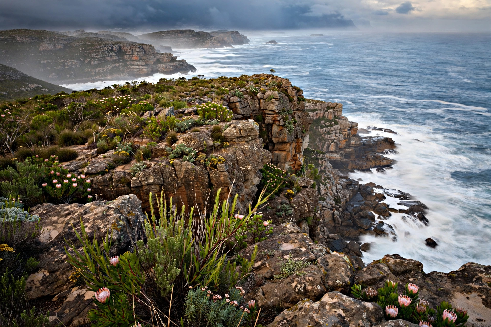

[Image placeholder: The Cape of Good Hope, South Africa]A **cape** is a headland of large size extending into a body of water, usually the sea, differing from a peninsula by being the extreme point of a larger land feature or by its narrower attachment. Capes are often significant for navigation — historically feared or celebrated landmarks on ocean routes.
Famous capes include the Cape of Good Hope (South Africa), gateway between the Atlantic and Indian Oceans; Cape Horn (Chile), the stormy southern tip of South America; Cape Leeuwin (Australia); Cape Agulhas, Africa's true southernmost point; Cape Byron, mainland Australia's easternmost point; and Cape Canaveral in Florida, the rocket-launch site. The word comes from Latin caput, 'head'.
Capes form where resistant rock withstands erosion while softer rock around it is worn away, or where currents deposit material. Because they project into the sea, capes concentrate wave energy (headland erosion) and often develop cliffs, arches and stacks, while sheltered bays beside them accumulate beaches.